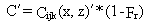

6.0 INDOOR AIR CONCENTRATION
An indoor air concentration component was added to allow evaluations of
long-term climatological exposures in residences.
The residence structure is assumed to be within one of the directional
computation sectors used in the implement of the sector average Gaussian
dispersion model. Two influences of the structure on indoor concentrations
are considered: indoor filtration/deposition and enhanced dispersion. The
use of a sector average dispersion model means that the lateral dispersion
(i.e., width of the building) will not be important in the concentration
computation. If plume has not sufficiently dispersed vertically to envelop
the structure, enhanced indoor vertical mixing can reduce the indoor concentrations
compared to outdoor concentrations. The filtration/deposition process which
is a function of contaminant properties will apply in all cases. The indoor
concentration is computed using

(76)
where
C´ = indoor concentration (g/m3 )
Cijk(x,z)´ = outdoor air concentration with sz minimum of hb (g/m3)
Fr = filtration efficiency fraction (dimensionless)
hb = interior height of building (m)
The MEPAS model default values for Fr are 0.9, 0.5, 0.10, 0.50,
0.0, 0.10, and 0.90 for deposition classes 1, 2, 3, 4, 5, 6, and 7, respectively.
The default value for hb is 2.44 m.
The average indoor concentration is computed in the same manner as the
outdoor concentration by summing the contributions for all ambient conditions.
Although the options for indoor concentrations are not incorporated in
the current MEPAS user interface, indoor concentrations computed based
on default values are computed and available in intermediate output files.